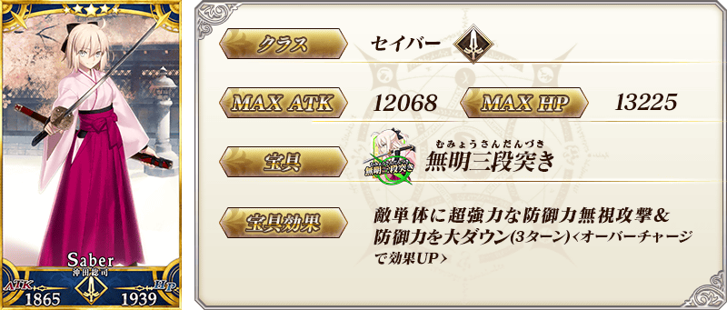
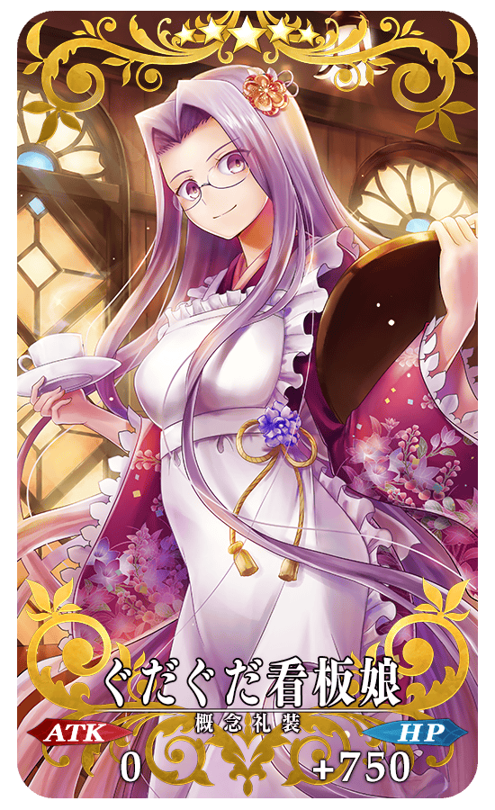
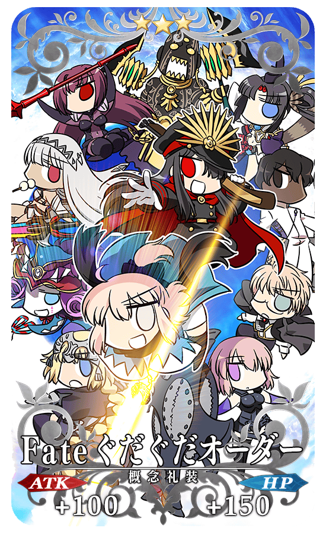
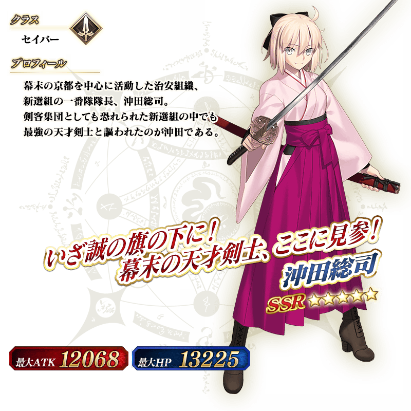

◆「沖田總司Pick Up召喚」期間◆
期間:2018年5月23日(三) 17:00～6月6日(三) 11:59
舉辦期間限定「沖田總司Pick Up召喚」！
「★5(SSR)沖田總司」以期間限定登場！
※沖田總司在Pick Up期間結束後不會追加到故事召喚。
詳情請在聖晶石召喚畫面左下的召喚詳細確認。
另外，「GUADAGUDA本能寺Pick Up召喚」限定概念禮裝「★5(SSR)ぐだぐだ看板娘」「★4(SR)打ち上げオーダー！」「★3(R)Fateぐだぐだオーダー」也以期間限定登場！
※「★3(R)Fateぐだぐだオーダー」在Pick Up期間中，也能在友情點數召喚獲得。
※請注意自友情點數召喚抽出「★3(R)Fateぐだぐだオーダー」在自動變還設定登錄★3(R)概念禮裝的情況，會變成自動變還的對象。
※本Pick Up召喚復刻Pick Up的概念禮裝不會有在期間限定活動「復刻:ぐだぐだ明治維新 輕量版」中提升活動専用道具掉落獲得數的效果。
Pick Up期間中，期間限定Servant、期間限定概念禮裝的出現機率提升！
10次召喚中確定1張★4(SR)以上和確定1位★3(R)以上的Servant！
※確定★4(SR)以上包含Servant和概念禮裝。

|  |
★★★★★SSR |
 |
★★★★SR |
|  |
★★★R |

介紹沖田總司的寶具演出！
在「Fate/Grand Order」官方網站內的公告中，公開了「★5(SSR)沖田總司」的寶具演出。敬請確認。
關於可入手活動限定Servant「★4(SR)茶茶」的期間限定活動「復刻:GUDAGUDA明治維新 輕量版」詳情請至下述橫幅確認。